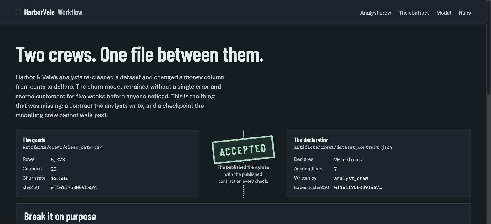
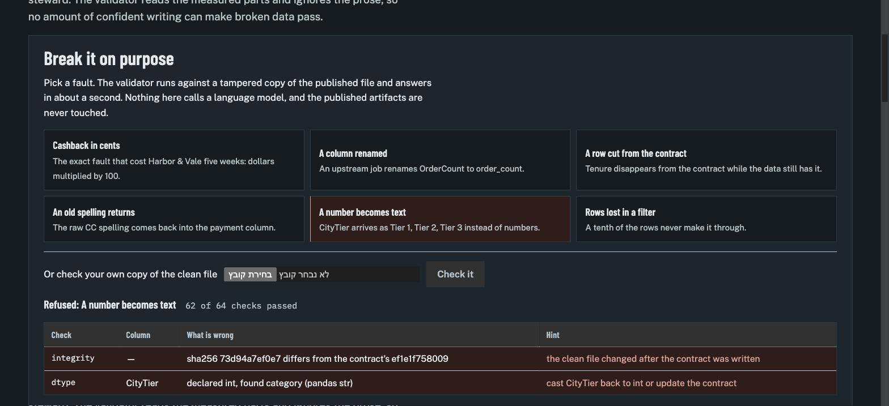
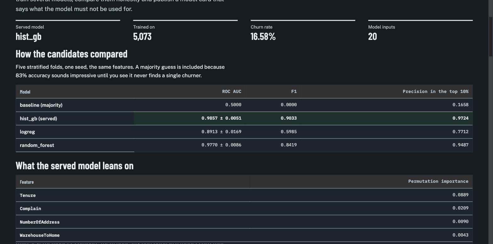

M6: האתר — נקודת ביקורת שאפשר לשבור
עד עכשיו התפר בין הצוותים היה קובץ ובדיקות. בתחנה הזאת הוא הפך למשהו שאפשר להראות: חמישה דפים שנבנים מהתוצרים המקומטים, ולוח שבו לוחצים על תקלה ורואים את המאמת מסרב תוך שנייה. בלי מודל שפה, בלי חישוב בדפדפן.
01מה נבנה
- דף הבית — נקודת הביקורת: משמאל הסחורה (
clean_data.csv: שורות, עמודות, שיעור נטישה, hash), מימין ההצהרה (dataset_contract.json), ובאמצע חותמת שאומרת Accepted. מתחת: לוח "שבור את זה". - דף החוזה: כל 20 העמודות עם התפקיד, הטיפוס, היחידה, הערכים המותרים, מספר הריקים, והתיאור והנימוק שאחראי הדאטה כתב. מעליו שבע ההנחות שלו.
- דף האנליסטים: מספרי הניקוי, מסמך התובנות, ודוח ה-EDA מוטמע כ-iframe.
- דף המודל: טבלת השוואה, חשיבויות מדורגות, כרטיס המודל. כרגע הוא אומר בכנות "עוד לא פורסם", כי התוצרים של יורן עדיין לא ב-main.
- דף הריצות: כמה עלתה הריצה, כמה זמן, וקישור לכל תוצר.
POST /api/validate: שש תקלות מוכנות או קובץ CSV שאתה מעלה. מריץ את אותוhv.contract.validateשל יורן על עותק מחובל בתיקייה זמנית; התוצרים המקומטים לא נגעים.


CityTier הוצהר כמספר והתקבל כטקסט. ההודעה אומרת גם מה לעשות.02השפה העיצובית: נמל, לא דשבורד
הברייף נותן שם לחברה — Harbor & Vale — ותפקיד: מכס בין שני צוותים. משם נגזר הכל, במקום עוד דשבורד עם כרטיסים מעוגלים וגרדיאנט.
- הרעיון: ביקורת מכס. מצד אחד הסחורה, מצד שני ההצהרה, ובאמצע פקח שחותם. הקו המקווקו הוא המחסום.
- טיפוגרפיה: כותרות ב-Barlow Condensed (שילוט תעשייתי), טקסט ב-Public Sans (הגופן של טפסים ממשלתיים — מתאים למסמך שהוא חוזה), מספרים ו-hash ב-IBM Plex Mono רק היכן שספרות צריכות להתיישר.
- צבע: בטון ופלדה של רציף. הצבעים הרוויים היחידים הם שני הפסקים: ירוק ים לאישור, אדום סימון לסירוב.
- אומץ במקום אחד: החותמת. היא גם האנימציה היחידה, היא זזה רק כשמישהו לוחץ, והיא מכובה כשהמשתמש ביקש פחות תנועה.
מה שרק צילום מסך תפס
הדפים נראו אפורים ושטוחים בבדיקה, למרות שהפלטה בקוד נכונה. הסיבה: מצב הכהות האוטומטי של כרום צובע מחדש דפים שלא מצהירים שהם מטפלים בזה בעצמם. הוספת color-scheme: light dark החזירה את הפלטה שלנו. קריאת ה-CSS לא הייתה מגלה את זה.
03נגישות ואיכות
- קישור דילוג לתוכן, פוקוס נראה בכל אלמנט אינטראקטיבי, ניווט מלא במקלדת.
- טבלאות סמנטיות עם
scope; אזור חי מנומס אחד שמכריז את הפסק לקורא מסך — הטבלה הנראית כבר נושאת את הפירוט, אז אין כפילות. - שדה העלאה עם תווית אמיתית; שגיאות אומרות מה קרה ומה לעשות (קובץ גדול מ-8MB, CSV שלא נקרא, פריסט לא מוכר).
- מצב כהה ובהיר, יחידות יחסיות, טבלאות רחבות גוללות בתוך עצמן ולא דוחפות את הדף.
- 29 בדיקות חדשות (205 בסך הכל): כל דף, כל פריסט, העלאת קובץ תקין ושבור, קובץ גדול מדי, ניסיון לצאת מהתיקייה בנתיב.
04תוצאת השער
| בדיקה | תוצאה |
|---|---|
| pytest ירוק (205 בדיקות) | PASS |
| ruff נקי | PASS |
| כל חמשת הדפים נבנים | PASS |
| לוח השבירה תופס את כל שש התקלות | PASS |
| צילומי מסך לדוח קיימים | PASS |
| כל הדפים מחזירים 200 ב-URL החי | PASS |
| לוח השבירה החי מסרב לקאשבק בסנטים | PASS |
GATE M6: PASS 7/7. אחרי מיזוג #17 ופריסה מחדש ב-Railway, כל שבע עברו. גם שאר השערים ירוקים על main: M1 7/7, M2 5/5, M3 8/8, M4 6/6.
בדיקה ידנית מול האתר החי: כל שש התקלות נתפסו — unit_change ← integrity, range · rename_column ← columns, integrity · drop_contract_field ← columns · bad_category ← integrity, values · dtype_change ← dtype, integrity · row_loss ← integrity, rows.

artifacts/crew2/: המודל המשרת, ההשוואה מול קו הבסיס, והחשיבויות מדורגות לפי ערך.05מה נשאר פתוח
מה שהיה תלוי ב-M4 — נסגר
שני הדברים נסגרו באותו ערב: M4 מוזג, דף המודל התמלא לבד (ראה הצילום למעלה), והנפילה הזמנית ב-app/routes.py נמחקה — הוא מייבא עכשיו את READ_CSV_KW ישירות.
לא נבדק: התנהגות ברוחב מובייל אמיתי. הפריסה בנויה לזה (עמודה אחת מתחת ל-60rem, טבלאות שגוללות בעצמן) ואין גלישה אופקית ברוחב שולחני, אבל שינוי גודל החלון בדפדפן לא נתפס בכלי הצילום, אז לא ראיתי את זה בעיניים. אבדוק אחרי הפריסה מול הטלפון.
06מה אני צריך ממך
- סדר מיזוג: קודם ה-PRים של יורן (#15 הקוד, #16 הדוחות), ואז #17 של האתר. ככה דף המודל נולד מלא במקום ריק.
- אישור מיזוג ל-#17 אחרי ש-CI ירוק.
אחרי הפריסה: אריץ את השער החי, אצרף צילום מהאתר האמיתי, ואעדכן את הדוח הזה ל-7/7. הבא בתור: M7 (ריצה חיה מאחורי סיסמה) או M5 (ה-Flow) יחד עם יורן — ה-Flow הוא התחנה המשותפת.